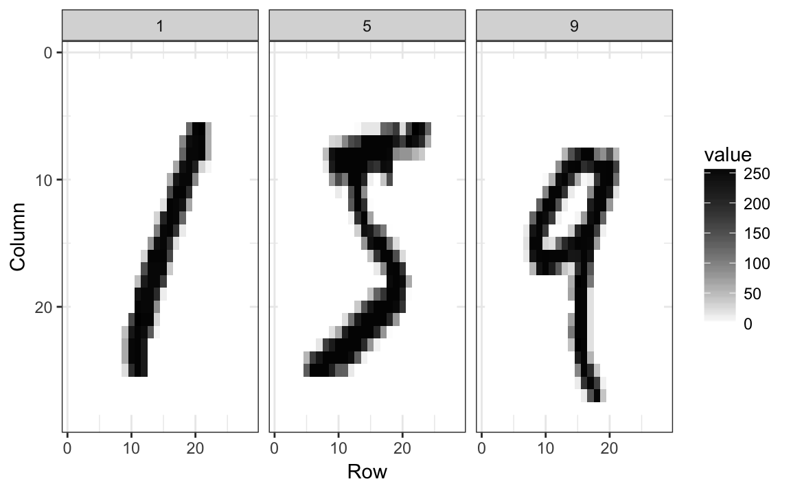
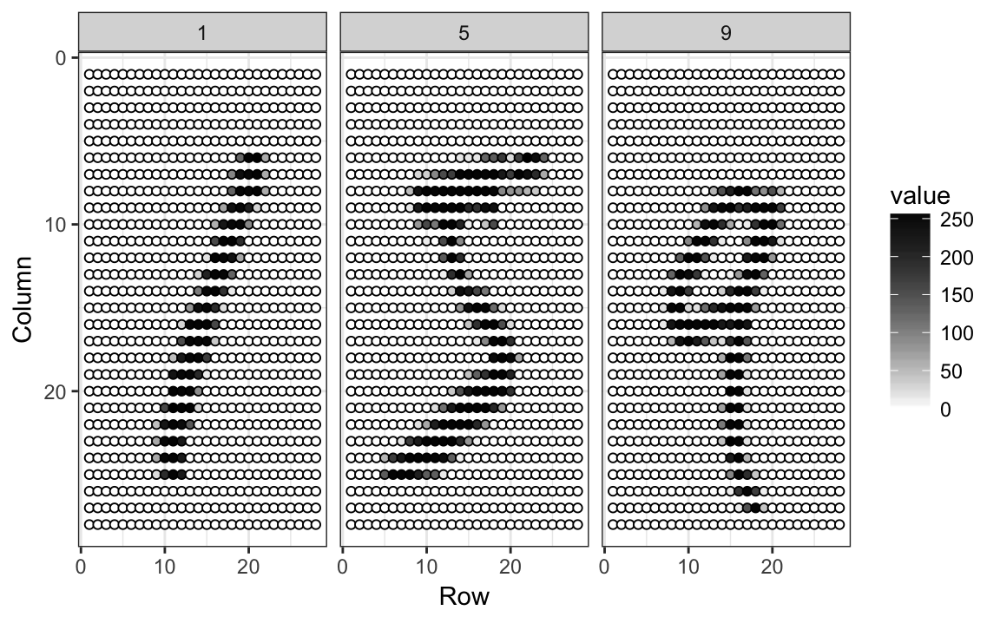
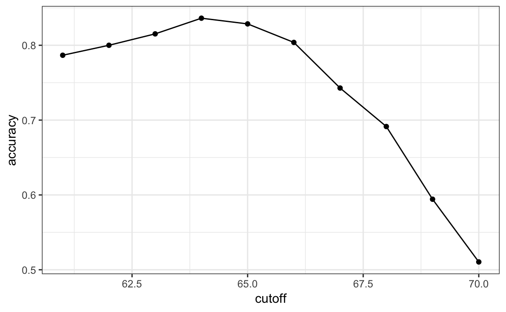
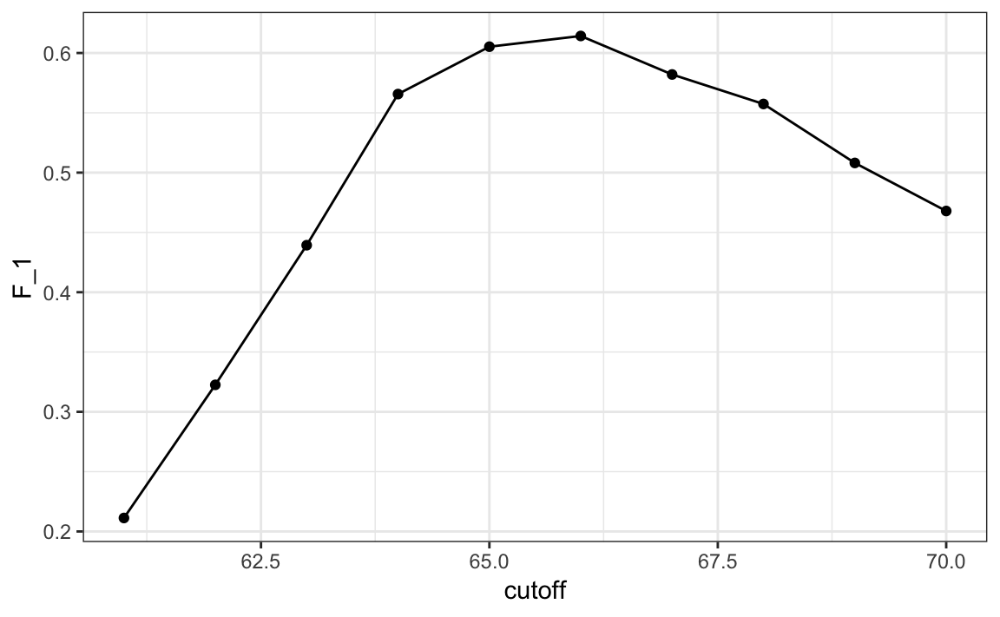
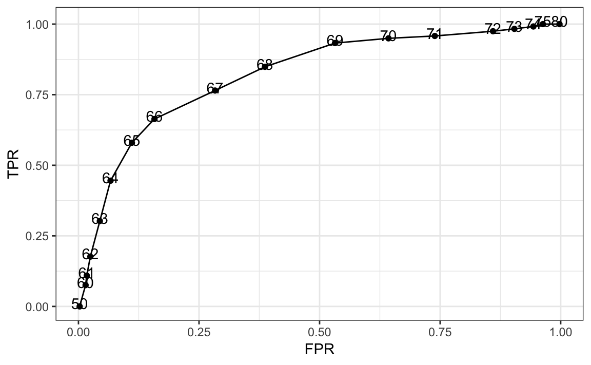
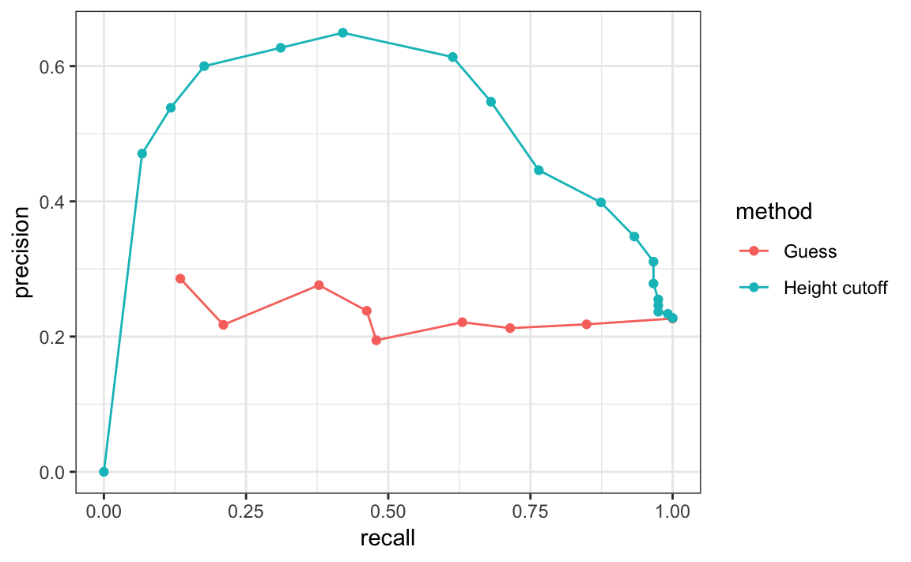
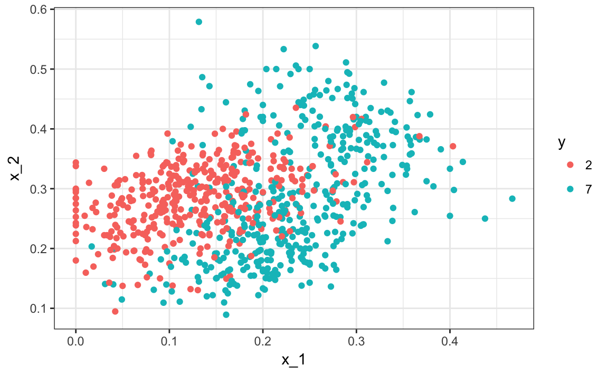
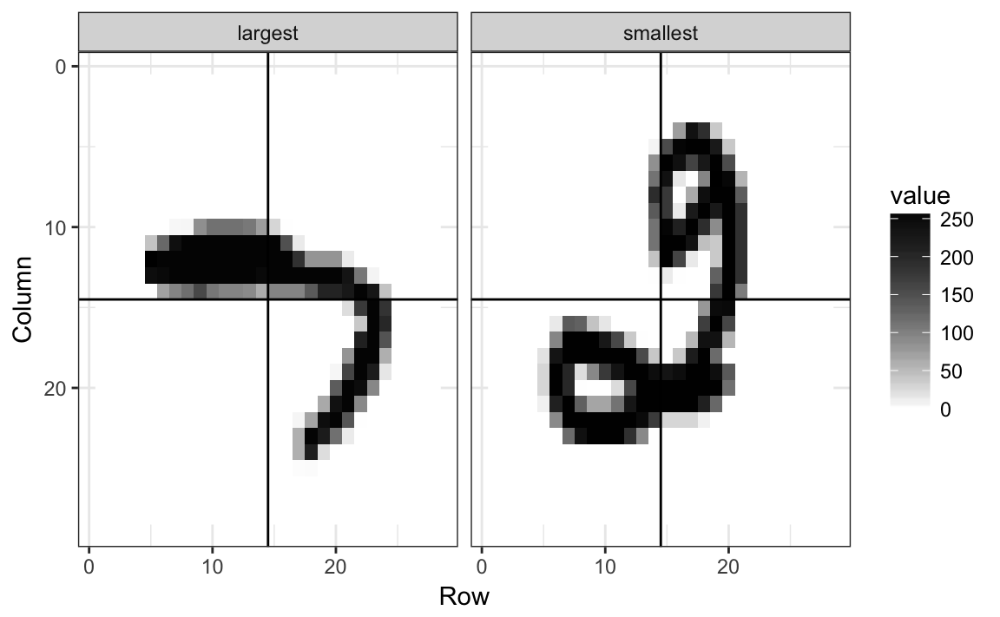
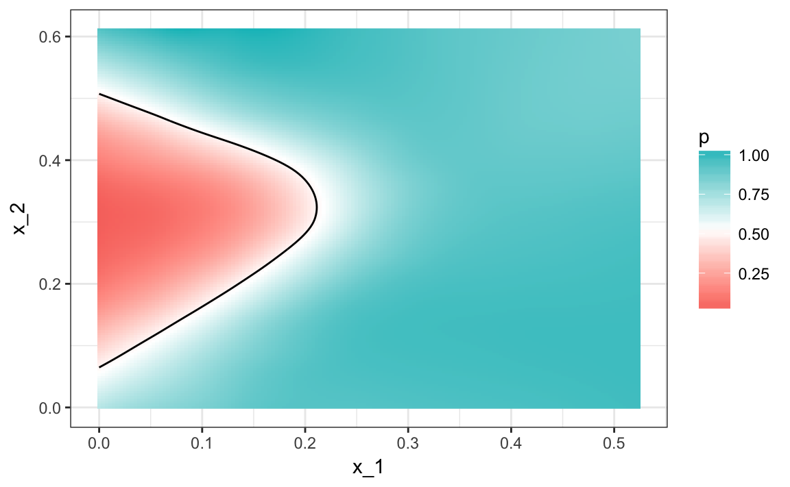
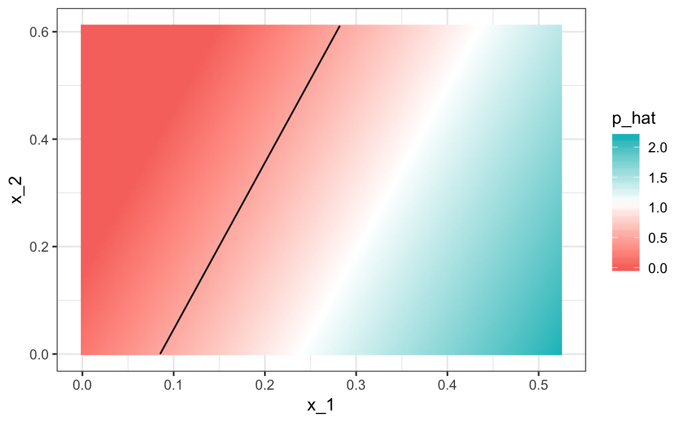

Chapter 27 Introduction to machine learning
Perhaps the most popular data science methodologies come from the field of machine learning. Machine learning success stories include the handwritten zip code readers implemented by the postal service, speech recognition technology such as Apple’s Siri, movie recommendation systems, spam and malware detectors, housing price predictors, and driverless cars. Although today Artificial Intelligence and machine learning are often used interchangeably, we make the following distinction: while the first artificial intelligence algorithms, such as those used by chess playing machines, implemented decision making based on programmable rules derived from theory or first principles, in machine learning decisions are based on algorithms built with data.
27.1 Notation
In machine learning, data comes in the form of:
- the outcome we want to predict and
- the features that we will use to predict the outcome
We want to build an algorithm that takes feature values as input and returns a prediction for the outcome when we don’t know the outcome. The machine learning approach is to train an algorithm using a dataset for which we do know the outcome, and then apply this algorithm in the future to make a prediction when we don’t know the outcome.
Here we will use \(Y\) to denote the outcome and \(X_1, \dots, X_p\) to denote features. Note that features are sometimes referred to as predictors or covariates. We consider all these to be synonyms.
Prediction problems can be divided into categorical and continuous outcomes. For categorical outcomes, \(Y\) can be any one of \(K\) classes. The number of classes can vary greatly across applications. For example, in the digit reader data, \(K=10\) with the classes being the digits 0, 1, 2, 3, 4, 5, 6, 7, 8, and 9. In speech recognition, the outcomes are all possible words or phrases we are trying to detect. Spam detection has two outcomes: spam or not spam. In this book, we denote the \(K\) categories with indexes \(k=1,\dots,K\). However, for binary data we will use \(k=0,1\) for mathematical conveniences that we demonstrate later.
The general setup is as follows. We have a series of features and an unknown outcome we want to predict:
| outcome | feature 1 | feature 2 | feature 3 | feature 4 | feature 5 |
|---|---|---|---|---|---|
| ? | \(X_1\) | \(X_2\) | \(X_3\) | \(X_4\) | \(X_5\) |
To build a model that provides a prediction for any set of observed values \(X_1=x_1, X_2=x_2, \dots X_5=x_5\), we collect data for which we know the outcome:
| outcome | feature 1 | feature 2 | feature 3 | feature 4 | feature 5 |
|---|---|---|---|---|---|
| \(y_{1}\) | \(x_{1,1}\) | \(x_{1,2}\) | \(x_{1,3}\) | \(x_{1,4}\) | \(x_{1,5}\) |
| \(y_{2}\) | \(x_{2,1}\) | \(x_{2,2}\) | \(x_{2,3}\) | \(x_{2,4}\) | \(x_{2,5}\) |
| \(\vdots\) | \(\vdots\) | \(\vdots\) | \(\vdots\) | \(\vdots\) | \(\vdots\) |
| \(y_n\) | \(x_{n,1}\) | \(x_{n,2}\) | \(x_{n,3}\) | \(x_{n,4}\) | \(x_{n,5}\) |
When the output is continuous we refer to the machine learning task as prediction, and the main output of the model is a function \(f\) that automatically produces a prediction, denoted with \(\hat{y}\), for any set of predictors: \(\hat{y} = f(x_1, x_2, \dots, x_p)\). We use the term actual outcome to denote what we ended up observing. So we want the prediction \(\hat{y}\) to match the actual outcome \(y\) as well as possible. Because our outcome is continuous, our predictions \(\hat{y}\) will not be either exactly right or wrong, but instead we will determine an error defined as the difference between the prediction and the actual outcome \(y - \hat{y}\).
When the outcome is categorical, we refer to the machine learning task as classification, and the main output of the model will be a decision rule which prescribes which of the \(K\) classes we should predict. In this scenario, most models provide functions of the predictors for each class \(k\), \(f_k(x_1, x_2, \dots, x_p)\), that are used to make this decision. When the data is binary a typical decision rules looks like this: if \(f_1(x_1, x_2, \dots, x_p) > C\), predict category 1, if not the other category, with \(C\) a predetermined cutoff. Because the outcomes are categorical, our predictions will be either right or wrong.
Notice that these terms vary among courses, text books, and other publications. Often prediction is used for both categorical and continuous outcomes, and the term regression can be used for the continuous case. Here we avoid using regression to avoid confusion with our previous use of the term linear regression. In most cases it will be clear if our outcomes are categorical or continuous, so we will avoid using these terms when possible.
27.2 An example
Let’s consider the zip code reader example. The first step in handling mail received in the post office is sorting letters by zip code:

Originally, humans had to sort these by hand. To do this, they had to read the zip codes on each letter. Today, thanks to machine learning algorithms, a computer can read zip codes and then a robot sorts the letters. In this part of the book, we will learn how to build algorithms that can read a digit.
The first step in building an algorithm is to understand what are the outcomes and features. Below are three images of written digits. These have already been read by a human and assigned an outcome \(Y\). These are considered known and serve as the training set.

The images are converted into \(28 \times 28 = 784\) pixels and, for each pixel, we obtain a grey scale intensity between 0 (white) and 255 (black), which we consider continuous for now. The following plot shows the individual features for each image:

For each digitized image \(i\), we have a categorical outcome \(Y_i\) which can be one of 10 values (\(0,1,2,3,4,5,6,7,8,9\)), and features \(X_{i,1}, \dots, X_{i,784}\). We use bold face \(\mathbf{X}_i = (X_{i,1}, \dots, X_{i,784})\) to distinguish the vector of predictors from the individual predictors. When referring to an arbitrary set of features rather than a specific image in our dataset, we drop the index \(i\) and use \(Y\) and \(\mathbf{X} = (X_{1}, \dots, X_{784})\). We use upper case variables because, in general, we think of the predictors as random variables. We use lower case, for example \(\mathbf{X} = \mathbf{x}\), to denote observed values. When we code we stick to lower case.
The machine learning task is to build an algorithm that returns a prediction for any of the possible values of the features. Here, we will learn several approaches to building these algorithms. Although at this point it might seem impossible to achieve this, we will start with simple examples and build up our knowledge until we can attack more complex ones. In fact, we start with an artificially simple example with just one predictor and then move on to a slightly more realistic example with two predictors. Once we understand these, we will attack real-world machine learning challenges involving many predictors.
27.3 Exercises
1. For each of the following, determine if the outcome is continuous or categorical:
- Digit reader
- Movie recommendations
- Spam filter
- Hospitalizations
- Siri (speech recognition)
2. How many features are available to us for prediction in the digits dataset?
3. In the digit reader example, the outcomes are stored here:
Do the following operations have a practical meaning?
Pick the best answer:
- Yes, because \(9 + 2 = 11\) and \(9 > 2\).
- No, because
yis not a numeric vector. - No, because 11 is not a digit. It’s two digits.
- No, because these are labels representing a category not a number. A
9represents a class not the number 9.
27.4 Evaluation metrics
Before we start describing approaches to optimize the way we build algorithms, we first need to define what we mean when we say one approach is better than another. In this section, we focus on describing ways in which machine learning algorithms are evaluated. Specifically, we need to quantify what we mean by “better”.
For our first introduction to machine learning concepts, we will start with a boring and simple example: how to predict sex using height. As we explain machine learning step by step, this example will let us set down the first building block. Soon enough, we will be attacking more interesting challenges. We use the caret package, which has several useful functions for building and assessing machine learning methods and we introduce in more detail in Section 30.
For a first example, we use the height data in dslabs:
We start by defining the outcome and predictors.
In this case, we have only one predictor, height, and y is clearly a categorical outcome since observed values are either Male or Female.
We know that we will not be able to predict \(Y\) very accurately based on \(X\) because male and female average heights are not that different relative to within group variability. But can we do better than guessing? To answer this question, we need a quantitative definition of better.
27.4.1 Training and test sets
Ultimately, a machine learning algorithm is evaluated on how it performs in the real world with completely new datasets. However, when developing an algorithm, we usually have a dataset for which we know the outcomes, as we do with the heights: we know the sex of every student in our dataset. Therefore, to mimic the ultimate evaluation process, we typically split the data into two parts and act as if we don’t know the outcome for one of these. We stop pretending we don’t know the outcome to evaluate the algorithm, but only after we are done constructing it. We refer to the group for which we know the outcome, and use to develop the algorithm, as the training set. We refer to the group for which we pretend we don’t know the outcome as the test set.
A standard way of generating the training and test sets is by randomly splitting the data. The caret package includes the function createDataPartition that helps us generates indexes for randomly splitting the data into training and test sets:
The argument times is used to define how many random samples of indexes to return, the argument p is used to define what proportion of the data is represented by the index, and the argument list is used to decide if we want the indexes returned as a list or not.
We can use the result of the createDataPartition function call to define the training and test sets like this:
We will now develop an algorithm using only the training set. Once we are done developing the algorithm, we will freeze it and evaluate it using the test set. The simplest way to evaluate the algorithm when the outcomes are categorical is by simply reporting the proportion of cases that were correctly predicted in the test set. This metric is usually referred to as overall accuracy.
27.4.2 Overall accuracy
To demonstrate the use of overall accuracy, we will build two competing algorithms and compare them.
Let’s start by developing the simplest possible machine algorithm: guessing the outcome.
Note that we are completely ignoring the predictor and simply guessing the sex.
In machine learning applications, it is useful to use factors to represent the categorical outcomes because R functions developed for machine learning, such as those in the caret package, require or recommend that categorical outcomes be coded as factors. So convert y_hat to factors using the factor function:
y_hat <- sample(c("Male", "Female"), length(test_index), replace = TRUE) %>%
factor(levels = levels(test_set$sex))The overall accuracy is simply defined as the overall proportion that is predicted correctly:
Not surprisingly, our accuracy is about 50%. We are guessing!
Can we do better? Exploratory data analysis suggests we can because, on average, males are slightly taller than females:
heights %>% group_by(sex) %>% summarize(mean(height), sd(height))
#> `summarise()` ungrouping output (override with `.groups` argument)
#> # A tibble: 2 x 3
#> sex `mean(height)` `sd(height)`
#> <fct> <dbl> <dbl>
#> 1 Female 64.9 3.76
#> 2 Male 69.3 3.61But how do we make use of this insight? Let’s try another simple approach: predict Male if height is within two standard deviations from the average male:
The accuracy goes up from 0.50 to about 0.80:
But can we do even better? In the example above, we used a cutoff of 62, but we can examine the accuracy obtained for other cutoffs and then pick the value that provides the best results. But remember, it is important that we optimize the cutoff using only the training set: the test set is only for evaluation. Although for this simplistic example it is not much of a problem, later we will learn that evaluating an algorithm on the training set can lead to overfitting, which often results in dangerously over-optimistic assessments.
Here we examine the accuracy of 10 different cutoffs and pick the one yielding the best result:
cutoff <- seq(61, 70)
accuracy <- map_dbl(cutoff, function(x){
y_hat <- ifelse(train_set$height > x, "Male", "Female") %>%
factor(levels = levels(test_set$sex))
mean(y_hat == train_set$sex)
})We can make a plot showing the accuracy obtained on the training set for males and females:

We see that the maximum value is:
which is much higher than 0.5. The cutoff resulting in this accuracy is:
We can now test this cutoff on our test set to make sure our accuracy is not overly optimistic:
y_hat <- ifelse(test_set$height > best_cutoff, "Male", "Female") %>%
factor(levels = levels(test_set$sex))
y_hat <- factor(y_hat)
mean(y_hat == test_set$sex)
#> [1] 0.804We see that it is a bit lower than the accuracy observed for the training set, but it is still better than guessing. And by testing on a dataset that we did not train on, we know our result is not due to cherry-picking a good result.
27.4.3 The confusion matrix
The prediction rule we developed in the previous section predicts Male if the student is taller than 64 inches. Given that the average female is about 64 inches, this prediction rule seems wrong. What happened? If a student is the height of the average female, shouldn’t we predict Female?
Generally speaking, overall accuracy can be a deceptive measure. To see this, we will start by constructing what is referred to as the confusion matrix, which basically tabulates each combination of prediction and actual value. We can do this in R using the function table:
table(predicted = y_hat, actual = test_set$sex)
#> actual
#> predicted Female Male
#> Female 48 32
#> Male 71 374If we study this table closely, it reveals a problem. If we compute the accuracy separately for each sex, we get:
test_set %>%
mutate(y_hat = y_hat) %>%
group_by(sex) %>%
summarize(accuracy = mean(y_hat == sex))
#> `summarise()` ungrouping output (override with `.groups` argument)
#> # A tibble: 2 x 2
#> sex accuracy
#> <fct> <dbl>
#> 1 Female 0.403
#> 2 Male 0.921There is an imbalance in the accuracy for males and females: too many females are predicted to be male. We are calling almost half of the females male! How can our overall accuracy be so high then? This is because the prevalence of males in this dataset is high. These heights were collected from three data sciences courses, two of which had more males enrolled:
So when computing overall accuracy, the high percentage of mistakes made for females is outweighed by the gains in correct calls for men. This can actually be a big problem in machine learning. If your training data is biased in some way, you are likely to develop algorithms that are biased as well. The fact that we used a test set does not matter because it is also derived from the original biased dataset. This is one of the reasons we look at metrics other than overall accuracy when evaluating a machine learning algorithm.
There are several metrics that we can use to evaluate an algorithm in a way that prevalence does not cloud our assessment, and these can all be derived from the confusion matrix. A general improvement to using overall accuracy is to study sensitivity and specificity separately.
27.4.4 Sensitivity and specificity
To define sensitivity and specificity, we need a binary outcome. When the outcomes are categorical, we can define these terms for a specific category. In the digits example, we can ask for the specificity in the case of correctly predicting 2 as opposed to some other digit. Once we specify a category of interest, then we can talk about positive outcomes, \(Y=1\), and negative outcomes, \(Y=0\).
In general, sensitivity is defined as the ability of an algorithm to predict a positive outcome when the actual outcome is positive: \(\hat{Y}=1\) when \(Y=1\). Because an algorithm that calls everything positive (\(\hat{Y}=1\) no matter what) has perfect sensitivity, this metric on its own is not enough to judge an algorithm. For this reason, we also examine specificity, which is generally defined as the ability of an algorithm to not predict a positive \(\hat{Y}=0\) when the actual outcome is not a positive \(Y=0\). We can summarize in the following way:
- High sensitivity: \(Y=1 \implies \hat{Y}=1\)
- High specificity: \(Y=0 \implies \hat{Y} = 0\)
Although the above is often considered the definition of specificity, another way to think of specificity is by the proportion of positive calls that are actually positive:
- High specificity: \(\hat{Y}=1 \implies Y=1\).
To provide precise definitions, we name the four entries of the confusion matrix:
| Actually Positive | Actually Negative | |
|---|---|---|
| Predicted positive | True positives (TP) | False positives (FP) |
| Predicted negative | False negatives (FN) | True negatives (TN) |
Sensitivity is typically quantified by \(TP/(TP+FN)\), the proportion of actual positives (the first column = \(TP+FN\)) that are called positives (\(TP\)). This quantity is referred to as the true positive rate (TPR) or recall.
Specificity is defined as \(TN/(TN+FP)\) or the proportion of negatives (the second column = \(FP+TN\)) that are called negatives (\(TN\)). This quantity is also called the true negative rate (TNR). There is another way of quantifying specificity which is \(TP/(TP+FP)\) or the proportion of outcomes called positives (the first row or \(TP+FP\)) that are actually positives (\(TP\)). This quantity is referred to as positive predictive value (PPV) and also as precision. Note that, unlike TPR and TNR, precision depends on prevalence since higher prevalence implies you can get higher precision even when guessing.
The multiple names can be confusing, so we include a table to help us remember the terms. The table includes a column that shows the definition if we think of the proportions as probabilities.
| Measure of | Name 1 | Name 2 | Definition | Probability representation |
|---|---|---|---|---|
| sensitivity | TPR | Recall | \(\frac{\mbox{TP}}{\mbox{TP} + \mbox{FN}}\) | \(\mbox{Pr}(\hat{Y}=1 \mid Y=1)\) |
| specificity | TNR | 1-FPR | \(\frac{\mbox{TN}}{\mbox{TN}+\mbox{FP}}\) | \(\mbox{Pr}(\hat{Y}=0 \mid Y=0)\) |
| specificity | PPV | Precision | \(\frac{\mbox{TP}}{\mbox{TP}+\mbox{FP}}\) | \(\mbox{Pr}(Y=1 \mid \hat{Y}=1)\) |
Here TPR is True Positive Rate, FPR is False Positive Rate, and PPV is Positive Predictive Value.
The caret function confusionMatrix computes all these metrics for us once we define what category “positive” is. The function expects factors as input, and the first level is considered the positive outcome or \(Y=1\). In our example, Female is the first level because it comes before Male alphabetically. If you type this into R you will see several metrics including accuracy, sensitivity, specificity, and PPV.
You can acceess these directly, for example, like this:
cm$overall["Accuracy"]
#> Accuracy
#> 0.804
cm$byClass[c("Sensitivity","Specificity", "Prevalence")]
#> Sensitivity Specificity Prevalence
#> 0.403 0.921 0.227We can see that the high overall accuracy is possible despite relatively low sensitivity. As we hinted at above, the reason this happens is because of the low prevalence (0.23): the proportion of females is low. Because prevalence is low, failing to predict actual females as females (low sensitivity) does not lower the accuracy as much as failing to predict actual males as males (low specificity). This is an example of why it is important to examine sensitivity and specificity and not just accuracy. Before applying this algorithm to general datasets, we need to ask ourselves if prevalence will be the same.
27.4.5 Balanced accuracy and \(F_1\) score
Although we usually recommend studying both specificity and sensitivity, very often it is useful to have a one-number summary, for example for optimization purposes. One metric that is preferred over overall accuracy is the average of specificity and sensitivity, referred to as balanced accuracy. Because specificity and sensitivity are rates, it is more appropriate to compute the harmonic average. In fact, the \(F_1\)-score, a widely used one-number summary, is the harmonic average of precision and recall:
\[ \frac{1}{\frac{1}{2}\left(\frac{1}{\mbox{recall}} + \frac{1}{\mbox{precision}}\right) } \]
Because it is easier to write, you often see this harmonic average rewritten as:
\[ 2 \times \frac{\mbox{precision} \cdot \mbox{recall}} {\mbox{precision} + \mbox{recall}} \]
when defining \(F_1\).
Remember that, depending on the context, some types of errors are more costly than others. For example, in the case of plane safety, it is much more important to maximize sensitivity over specificity: failing to predict a plane will malfunction before it crashes is a much more costly error than grounding a plane when, in fact, the plane is in perfect condition. In a capital murder criminal case, the opposite is true since a false positive can lead to executing an innocent person. The \(F_1\)-score can be adapted to weigh specificity and sensitivity differently. To do this, we define \(\beta\) to represent how much more important sensitivity is compared to specificity and consider a weighted harmonic average:
\[ \frac{1}{\frac{\beta^2}{1+\beta^2}\frac{1}{\mbox{recall}} + \frac{1}{1+\beta^2}\frac{1}{\mbox{precision}} } \]
The F_meas function in the caret package computes this summary with beta defaulting to 1.
Let’s rebuild our prediction algorithm, but this time maximizing the F-score instead of overall accuracy:
cutoff <- seq(61, 70)
F_1 <- map_dbl(cutoff, function(x){
y_hat <- ifelse(train_set$height > x, "Male", "Female") %>%
factor(levels = levels(test_set$sex))
F_meas(data = y_hat, reference = factor(train_set$sex))
})As before, we can plot these \(F_1\) measures versus the cutoffs:

We see that it is maximized at \(F_1\) value of:
This maximum is achieved when we use the following cutoff:
A cutoff of 66 makes more sense than 64. Furthermore, it balances the specificity and sensitivity of our confusion matrix:
y_hat <- ifelse(test_set$height > best_cutoff, "Male", "Female") %>%
factor(levels = levels(test_set$sex))
sensitivity(data = y_hat, reference = test_set$sex)
#> [1] 0.63
specificity(data = y_hat, reference = test_set$sex)
#> [1] 0.833We now see that we do much better than guessing, that both sensitivity and specificity are relatively high, and that we have built our first machine learning algorithm. It takes height as a predictor and predicts female if you are 65 inches or shorter.
27.4.6 Prevalence matters in practice
A machine learning algorithm with very high sensitivity and specificity may not be useful in practice when prevalence is close to either 0 or 1. To see this, consider the case of a doctor that specializes in a rare disease and is interested in developing an algorithm for predicting who has the disease. The doctor shares data with you and you then develop an algorithm with very high sensitivity. You explain that this means that if a patient has the disease, the algorithm is very likely to predict correctly. You also tell the doctor that you are also concerned because, based on the dataset you analyzed, 1/2 the patients have the disease: \(\mbox{Pr}(\hat{Y}=1)\). The doctor is neither concerned nor impressed and explains that what is important is the precision of the test: \(\mbox{Pr}(Y=1 | \hat{Y}=1)\). Using Bayes theorem, we can connect the two measures:
\[ \mbox{Pr}(Y = 1\mid \hat{Y}=1) = \mbox{Pr}(\hat{Y}=1 \mid Y=1) \frac{\mbox{Pr}(Y=1)}{\mbox{Pr}(\hat{Y}=1)}\]
The doctor knows that the prevalence of the disease is 5 in 1,000, which implies that \(\mbox{Pr}(Y=1) \, / \,\mbox{Pr}(\hat{Y}=1) = 1/100\) and therefore the precision of your algorithm is less than 0.01. The doctor does not have much use for your algorithm.
27.4.7 ROC and precision-recall curves
When comparing the two methods (guessing versus using a height cutoff), we looked at accuracy and \(F_1\). The second method clearly outperformed the first. However, while we considered several cutoffs for the second method, for the first we only considered one approach: guessing with equal probability. Note that guessing Male with higher probability would give us higher accuracy due to the bias in the sample:
p <- 0.9
n <- length(test_index)
y_hat <- sample(c("Male", "Female"), n, replace = TRUE, prob=c(p, 1-p)) %>%
factor(levels = levels(test_set$sex))
mean(y_hat == test_set$sex)
#> [1] 0.739But, as described above, this would come at the cost of lower sensitivity. The curves we describe in this section will help us see this.
Remember that for each of these parameters, we can get a different sensitivity and specificity. For this reason, a very common approach to evaluating methods is to compare them graphically by plotting both.
A widely used plot that does this is the receiver operating characteristic (ROC) curve. If you are wondering where this name comes from, you can consult the ROC Wikipedia page99.
The ROC curve plots sensitivity (TPR) versus 1 - specificity or the false positive rate (FPR). Here we compute the TPR and FPR needed for different probabilities of guessing male:
probs <- seq(0, 1, length.out = 10)
guessing <- map_df(probs, function(p){
y_hat <-
sample(c("Male", "Female"), n, replace = TRUE, prob=c(p, 1-p)) %>%
factor(levels = c("Female", "Male"))
list(method = "Guessing",
FPR = 1 - specificity(y_hat, test_set$sex),
TPR = sensitivity(y_hat, test_set$sex))
})We can use similar code to compute these values for our our second approach. By plotting both curves together, we are able to compare sensitivity for different values of specificity:

We can see that we obtain higher sensitivity with this approach for all values of specificity, which implies it is in fact a better method. Note that ROC curves for guessing always fall on the identiy line. Also note that when making ROC curves, it is often nice to add the cutoff associated with each point.
The packages pROC and plotROC are useful for generating these plots.
ROC curves have one weakness and it is that neither of the measures plotted depends on prevalence. In cases in which prevalence matters, we may instead make a precision-recall plot. The idea is similar, but we instead plot precision against recall:

From this plot we immediately see that the precision of guessing is not high. This is because the prevalence is low. We also see that if we change positives to mean Male instead of Female, the ROC curve remains the same, but the precision recall plot changes.
27.4.8 The loss function
Up to now we have described evaluation metrics that apply exclusively to categorical data. Specifically, for binary outcomes, we have described how sensitivity, specificity, accuracy, and \(F_1\) can be used as quantification. However, these metrics are not useful for continuous outcomes. In this section, we describe how the general approach to defining “best” in machine learning is to define a loss function, which can be applied to both categorical and continuous data.
The most commonly used loss function is the squared loss function. If \(\hat{y}\) is our predictor and \(y\) is the observed outcome, the squared loss function is simply:
\[ (\hat{y} - y)^2 \]
Because we often have a test set with many observations, say \(N\), we use the mean squared error (MSE):
\[ \mbox{MSE} = \frac{1}{N} \mbox{RSS} = \frac{1}{N}\sum_{i=1}^N (\hat{y}_i - y_i)^2 \]
In practice, we often report the root mean squared error (RMSE), which is \(\sqrt{\mbox{MSE}}\), because it is in the same units as the outcomes. But doing the math is often easier with the MSE and it is therefore more commonly used in textbooks, since these usually describe theoretical properties of algorithms.
If the outcomes are binary, both RMSE and MSE are equivalent to one minus accuracy, since \((\hat{y} - y)^2\) is 0 if the prediction was correct and 1 otherwise. In general, our goal is to build an algorithm that minimizes the loss so it is as close to 0 as possible.
Because our data is usually a random sample, we can think of the MSE as a random variable and the observed MSE can be thought of as an estimate of the expected MSE, which in mathematical notation we write like this:
\[ \mbox{E}\left\{ \frac{1}{N}\sum_{i=1}^N (\hat{Y}_i - Y_i)^2 \right\} \]
This is a theoretical concept because in practice we only have one dataset to work with. But in theory, we think of having a very large number of random samples (call it \(B\)), apply our algorithm to each, obtain an MSE for each random sample, and think of the expected MSE as:
\[ \frac{1}{B} \sum_{b=1}^B \frac{1}{N}\sum_{i=1}^N \left(\hat{y}_i^b - y_i^b\right)^2 \]
with \(y_{i}^b\) denoting the \(i\)th observation in the \(b\)th random sample and \(\hat{y}_i^b\) the resulting prediction obtained from applying the exact same algorithm to the \(b\)th random sample. Again, in practice we only observe one random sample, so the expected MSE is only theoretical. However, in Chapter 29 we describe an approach to estimating the MSE that tries to mimic this theoretical quantity.
Note that there are loss functions other than the squared loss. For example, the Mean Absolute Error uses absolute values, \(|\hat{Y}_i - Y_i|\) instead of squaring the errors \((\hat{Y}_i - Y_i)^2\). However, in this book we focus on minimizing square loss since it is the most widely used.
27.5 Exercises
The reported_height and height datasets were collected from three classes taught in the Departments of Computer Science and Biostatistics, as well as remotely through the Extension School. The biostatistics class was taught in 2016 along with an online version offered by the Extension School. On 2016-01-25 at 8:15 AM, during one of the lectures, the instructors asked students to fill in the sex and height questionnaire that populated the reported_height dataset. The online students filled the survey during the next few days, after the lecture was posted online. We can use this insight to define a variable, call it type, to denote the type of student: inclass or online:
library(lubridate)
data("reported_heights")
dat <- mutate(reported_heights, date_time = ymd_hms(time_stamp)) %>%
filter(date_time >= make_date(2016, 01, 25) &
date_time < make_date(2016, 02, 1)) %>%
mutate(type = ifelse(day(date_time) == 25 & hour(date_time) == 8 &
between(minute(date_time), 15, 30),
"inclass", "online")) %>% select(sex, type)
x <- dat$type
y <- factor(dat$sex, c("Female", "Male"))1. Show summary statistics that indicate that the type is predictive of sex.
2. Instead of using height to predict sex, use the type variable.
3. Show the confusion matrix.
4. Use the confusionMatrix function in the caret package to report accuracy.
5. Now use the sensitivity and specificity functions to report specificity and sensitivity.
6. What is the prevalence (% of females) in the dat dataset defined above?
27.6 Conditional probabilities and expectations
In machine learning applications, we rarely can predict outcomes perfectly. For example, spam detectors often miss emails that are clearly spam, Siri often misunderstands the words we are saying, and your bank at times thinks your card was stolen when it was not. The most common reason for not being able to build perfect algorithms is that it is impossible. To see this, note that most datasets will include groups of observations with the same exact observed values for all predictors, but with different outcomes. Because our prediction rules are functions, equal inputs (the predictors) implies equal outputs (the predictions). Therefore, for a challenge in which the same predictors are associated with different outcomes across different individual observations, it is impossible to predict correctly for all these cases. We saw a simple example of this in the previous section: for any given height \(x\), you will have both males and females that are \(x\) inches tall.
However, none of this means that we can’t build useful algorithms that are much better than guessing, and in some cases better than expert opinions. To achieve this in an optimal way, we make use of probabilistic representations of the problem based on the ideas presented in Section 17.3. Observations with the same observed values for the predictors may not all be the same, but we can assume that they all have the same probability of this class or that class. We will write this idea out mathematically for the case of categorical data.
27.6.1 Conditional probabilities
We use the notation \((X_1 = x_1,\dots,X_p=x_p)\) to represent the fact that we have observed values \(x_1,\dots,x_p\) for covariates \(X_1, \dots, X_p\). This does not imply that the outcome \(Y\) will take a specific value. Instead, it implies a specific probability. In particular, we denote the conditional probabilities for each class \(k\):
\[ \mbox{Pr}(Y=k \mid X_1 = x_1,\dots,X_p=x_p), \, \mbox{for}\,k=1,\dots,K \]
To avoid writing out all the predictors, we will use the bold letters like this: \(\mathbf{X} \equiv (X_1,\dots,X_p)\) and \(\mathbf{x} \equiv (x_1,\dots,x_p)\). We will also use the following notation for the conditional probability of being class \(k\):
\[ p_k(\mathbf{x}) = \mbox{Pr}(Y=k \mid \mathbf{X}=\mathbf{x}), \, \mbox{for}\, k=1,\dots,K \]
Note: We will be using the \(p(x)\) notation to represent conditional probabilities as functions of the predictors. Do not confuse it with the \(p\) that represents the number of predictors.
These probabilities guide the construction of an algorithm that makes the best prediction: for any given \(\mathbf{x}\), we will predict the class \(k\) with the largest probability among \(p_1(x), p_2(x), \dots p_K(x)\). In mathematical notation, we write it like this: \(\hat{Y} = \max_k p_k(\mathbf{x})\).
In machine learning, we refer to this as Bayes’ Rule. But keep in mind that this is a theoretical rule since in practice we don’t know \(p_k(\mathbf{x}), k=1,\dots,K\). In fact, estimating these conditional probabilities can be thought of as the main challenge of machine learning. The better our probability estimates \(\hat{p}_k(\mathbf{x})\), the better our predictor:
\[\hat{Y} = \max_k \hat{p}_k(\mathbf{x})\]
So what we will predict depends on two things: 1) how close are the \(\max_k p_k(\mathbf{x})\) to 1 or 0 (perfect certainty) and 2) how close our estimates \(\hat{p}_k(\mathbf{x})\) are to \(p_k(\mathbf{x})\). We can’t do anything about the first restriction as it is determined by the nature of the problem, so our energy goes into finding ways to best estimate conditional probabilities. The first restriction does imply that we have limits as to how well even the best possible algorithm can perform. You should get used to the idea that while in some challenges we will be able to achieve almost perfect accuracy, with digit readers for example, in others our success is restricted by the randomness of the process, with movie recommendations for example.
Before we continue, it is important to remember that defining our prediction by maximizing the probability is not always optimal in practice and depends on the context. As discussed above, sensitivity and specificity may differ in importance. But even in these cases, having a good estimate of the \(p_k(x), k=1,\dots,K\) will suffice for us to build optimal prediction models, since we can control the balance between specificity and sensitivity however we wish. For instance, we can simply change the cutoffs used to predict one outcome or the other. In the plane example, we may ground the plane anytime the probability of malfunction is higher than 1 in a million as opposed to the default 1/2 used when error types are equally undesired.
27.6.2 Conditional expectations
For binary data, you can think of the probability \(\mbox{Pr}(Y=1 \mid \mathbf{X}=\mathbf{x})\) as the proportion of 1s in the stratum of the population for which \(\mathbf{X}=\mathbf{x}\). Many of the algorithms we will learn can be applied to both categorical and continuous data due to the connection between conditional probabilities and conditional expectations.
Because the expectation is the average of values \(y_1,\dots,y_n\) in the population, in the case in which the \(y\)s are 0 or 1, the expectation is equivalent to the probability of randomly picking a one since the average is simply the proportion of ones:
\[ \mbox{E}(Y \mid \mathbf{X}=\mathbf{x})=\mbox{Pr}(Y=1 \mid \mathbf{X}=\mathbf{x}). \]
As a result, we often only use the expectation to denote both the conditional probability and conditional expectation.
Just like with categorical outcomes, in most applications the same observed predictors do not guarantee the same continuous outcomes. Instead, we assume that the outcome follows the same conditional distribution. We will now explain why we use the conditional expectation to define our predictors.
27.6.3 Conditional expectation minimizes squared loss function
Why do we care about the conditional expectation in machine learning? This is because the expected value has an attractive mathematical property: it minimizes the MSE. Specifically, of all possible predictions \(\hat{Y}\),
\[ \hat{Y} = \mbox{E}(Y \mid \mathbf{X}=\mathbf{x}) \, \mbox{ minimizes } \, \mbox{E}\{ (\hat{Y} - Y)^2 \mid \mathbf{X}=\mathbf{x} \} \]
Due to this property, a succinct description of the main task of machine learning is that we use data to estimate:
\[ f(\mathbf{x}) \equiv \mbox{E}( Y \mid \mathbf{X}=\mathbf{x} ) \]
for any set of features \(\mathbf{x} = (x_1, \dots, x_p)\). Of course this is easier said than done, since this function can take any shape and \(p\) can be very large. Consider a case in which we only have one predictor \(x\). The expectation \(\mbox{E}\{ Y \mid X=x \}\) can be any function of \(x\): a line, a parabola, a sine wave, a step function, anything. It gets even more complicated when we consider instances with large \(p\), in which case \(f(\mathbf{x})\) is a function of a multidimensional vector \(\mathbf{x}\). For example, in our digit reader example \(p = 784\)! The main way in which competing machine learning algorithms differ is in their approach to estimating this expectation.
27.7 Exercises
1. Compute conditional probabilities for being Male for the heights dataset. Round the heights to the closest inch. Plot the estimated conditional probability \(P(x) = \mbox{Pr}(\mbox{Male} | \mbox{height}=x)\) for each \(x\).
2. In the plot we just made, we see high variability for low values of height. This is because we have few data points in these strata. This time use the quantile function for quantiles \(0.1,0.2,\dots,0.9\) and the cut function to assure each group has the same number of points. Hint: for any numeric vector x, you can create groups based on quantiles like this:
3. Generate data from a bivariate normal distribution using the MASS package like this:
Sigma <- 9*matrix(c(1,0.5,0.5,1), 2, 2)
dat <- MASS::mvrnorm(n = 10000, c(69, 69), Sigma) %>%
data.frame() %>% setNames(c("x", "y"))You can make a quick plot of the data using plot(dat). Use an approach similar to the previous exercise to estimate the conditional expectations and make a plot.
27.8 Case study: is it a 2 or a 7?
In the two simple examples above, we only had one predictor. We actually do not consider these machine learning challenges, which are characterized by cases with many predictors. Let’s go back to the digits example in which we had 784 predictors. For illustrative purposes, we will start by simplifying this problem to one with two predictors and two classes. Specifically, we define the challenge as building an algorithm that can determine if a digit is a 2 or 7 from the predictors. We are not quite ready to build algorithms with 784 predictors, so we will extract two simple predictors from the 784: the proportion of dark pixels that are in the upper left quadrant (\(X_1\)) and the lower right quadrant (\(X_2\)).
We then select a random sample of 1,000 digits, 500 in the training set and 500 in the test set. We provide this dataset in the dslabs package:
We can explore the data by plotting the two predictors and using colors to denote the labels:

We can immediately see some patterns. For example, if \(X_1\) (the upper left panel) is very large, then the digit is probably a 7. Also, for smaller values of \(X_1\), the 2s appear to be in the mid range values of \(X_2\).
These are the images of the digits with the largest and smallest values for \(X_1\): And here are the original images corresponding to the largest and smallest value of \(X_2\):

We can start getting a sense for why these predictors are useful, but also why the problem will be somewhat challenging.
We haven’t really learned any algorithms yet, so let’s try building an algorithm using regression. The model is simply:
\[ p(x_1, x_2) = \mbox{Pr}(Y=1 \mid X_1=x_1 , X_2 = x_2) = \beta_0 + \beta_1 x_1 + \beta_2 x_2 \]
We fit it like this:
We can now build a decision rule based on the estimate of \(\hat{p}(x_1, x_2)\):
library(caret)
p_hat <- predict(fit, newdata = mnist_27$test)
y_hat <- factor(ifelse(p_hat > 0.5, 7, 2))
confusionMatrix(y_hat, mnist_27$test$y)$overall[["Accuracy"]]
#> [1] 0.75We get an accuracy well above 50%. Not bad for our first try. But can we do better?
Because we constructed the mnist_27 example and we had at our disposal 60,000 digits in just the MNIST dataset, we used this to build the true conditional distribution \(p(x_1, x_2)\). Keep in mind that this is something we don’t have access to in practice, but we include it in this example because it permits the comparison of \(\hat{p}(x_1, x_2)\) to the true \(p(x_1, x_2)\). This comparison teaches us the limitations of different algorithms. Let’s do that here. We have stored the true \(p(x_1,x_2)\) in the mnist_27 object and can plot the image using the ggplot2 function geom_raster().
We choose better colors and use the stat_contour function to draw a curve that separates pairs \((x_1,x_2)\) for which \(p(x_1,x_2) > 0.5\) and pairs for which \(p(x_1,x_2) < 0.5\):
mnist_27$true_p %>% ggplot(aes(x_1, x_2, z = p, fill = p)) +
geom_raster() +
scale_fill_gradientn(colors=c("#F8766D", "white", "#00BFC4")) +
stat_contour(breaks=c(0.5), color="black")
Above you see a plot of the true \(p(x,y)\). To start understanding the limitations of logistic regression here, first note that with logistic regression \(\hat{p}(x,y)\) has to be a plane, and as a result the boundary defined by the decision rule is given by: \(\hat{p}(x,y) = 0.5\), which implies the boundary can’t be anything other than a straight line:
\[
\hat{\beta}_0 + \hat{\beta}_1 x_1 + \hat{\beta}_2 x_2 = 0.5 \implies
\hat{\beta}_0 + \hat{\beta}_1 x_1 + \hat{\beta}_2 x_2 = 0.5 \implies
x_2 = (0.5-\hat{\beta}_0)/\hat{\beta}_2 -\hat{\beta}_1/\hat{\beta}_2 x_1
\]
Note that for this boundary, \(x_2\) is a linear function of \(x_1\). This implies that our logistic regression approach has no chance of capturing the non-linear nature of the true \(p(x_1,x_2)\). Below is a visual representation of \(\hat{p}(x_1, x_2)\). We used the squish function from the scales package to constrain estimates to be between 0 and 1. We can see where the mistakes were made by also showing the data and the boundary. They mainly come from low values \(x_1\) that have either high or low value of \(x_2\). Regression can’t catch this.

We need something more flexible: a method that permits estimates with shapes other than a plane.
We are going to learn a few new algorithms based on different ideas and concepts. But what they all have in common is that they permit more flexible approaches. We will start by describing nearest neighbor and kernel approaches. To introduce the concepts behinds these approaches, we will again start with a simple one-dimensional example and describe the concept of smoothing.